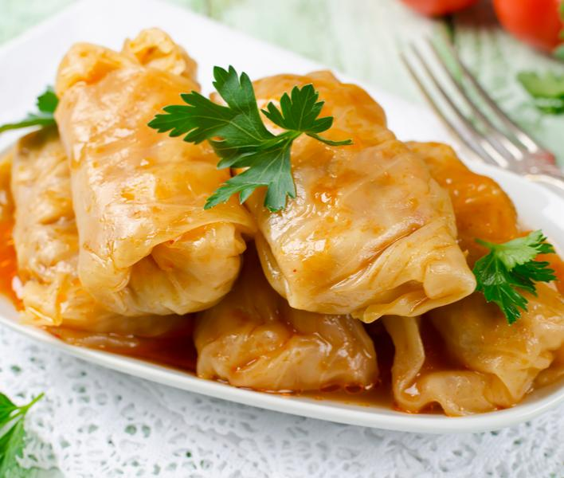

Sarma

Description
This recipe for Serbian stuffed cabbage,
or sarma, is a hearty dish that many Serbs serve every
day but especially for special occasions like slavas and other holidays.
Recipes vary from cook to cook, but they all consist of a meat filling
wrapped in cabbage and cooked over sauerkraut. This recipe includes a
tomato sauce for more flavor.
Sarma, or Serbian stuffed cabbage, is a meal in and of itself and needs
little accompaniment. A side of fresh bread or potato salad makes it a feast,
or try starting with soup like pasulj.
Ingredients
- 1 (3-to 4-pound) head cabbage
- 1 pound ground chuck
- 1/2 pound ground pork
- 1 cup raw rice, rinsed
- 1 (1.4-ounce) package dehydrated onion soup mix
- 1 (32-ounce) jar sauerkraut, rinsed and drained
- 6 medium smoked ribs, ham hocks, or other smoked meat
- 1 (8-ounce) can tomato sauce
- 1 (10 3/4-ounce) can tomato soup
Steps
- Steam the head of cabbage until the outer leaves are limp,
then cool slightly and separate the leaves.
- With a paring knife, remove the tough ribs from the leaves without damaging them.
Reserve the tougher outer leaves, but don't use for rolling.
- In a medium bowl, mix together the ground chuck, ground pork, rice, and onion soup mix.
- Adding a small amount of water will make the mixture easier to handle.
- Heap 2 tablespoons of filling onto each steamed, prepared cabbage leaf.
- Fold the bottom of the cabbage leaf up over the meat.
- Fold sides to the center and roll away from yourself to encase completely.
- Repeat until the meat filling is gone.
- Heat oven to 350 F.
- Discard the cabbage core and coarsely chop any remaining cabbage except
the tough outer leaves you have reserved.
- Spread the chopped cabbage on the bottom of a large casserole dish or Dutch oven.
Add the drained sauerkraut.
- Layer on the cabbage rolls, seam-side down.
- Cut the smoked ribs into pieces. Space the ribs or
other smoked meat of choice between the cabbage rolls.
- Cover rolls with reserved tough outer leaves.
- Mix tomato sauce and soup with enough water to make a liquidy consistency.
- Pour over rolls until mixture is level with rolls, but not over the top.
- Cover the casserole dish and bake 1 hour.
- Then reduce temperature to 325 F and bake for 2 more hours.
- Let sit 20 to 30 minutes before serving.
Go back